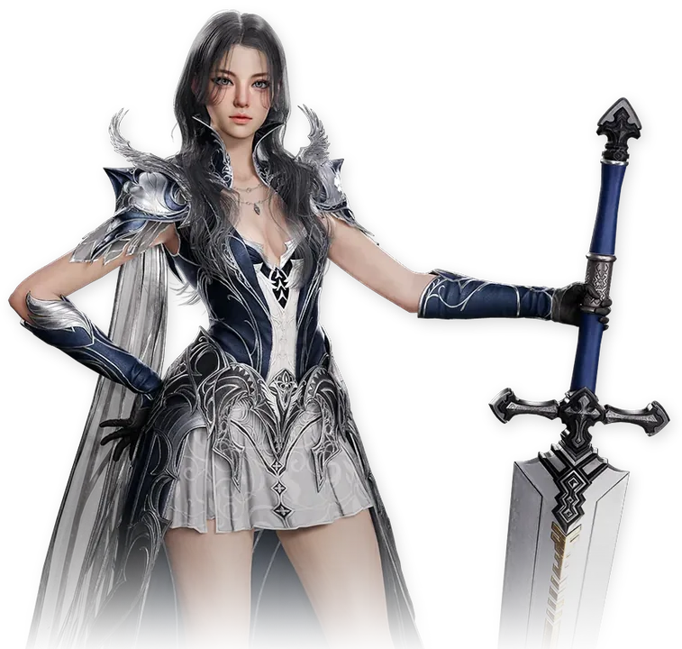

Global Season 1
Sınıf buildleri ve rehberleri tek bir yerde
İçerik üreticilerinin PvE ve PvP buildleri tek yerde, artı seviye atlama listesi. Her rehber kaynaklarını ve hâlâ Kore/Tayvan deneyimine dayandığı yerleri belirtir.
Buradaki tüm rehberler içerik üreticilerinden geliyor — her sayfa kaynaklarına bağlantı veriyor ve tüm emek onlara ait. Ben yalnızca rehberlerini Claude (yapay zekâ) yardımıyla topluyor, kontrol ediyor ve düzenliyorum. Tüm kaynaklar ve içerik üreticileri →
Sınıflar
-

 Güncellendi
GüncellendiGladiator
Yakın dövüş DPS · bruiser · Greatsword
Önden yüklenen hasar, yarı-tank araç seti ve tek bir stigma sayesinde neredeyse sürekli hazır bekleme süreleri.
-

 Güncellendi
GüncellendiRanger
Menzilli DPS · kiter · Bow
Bufflar, şarjlı Deadshot'lar ve kanamalar üzerine kurulu 20 metrelik patlama hasarı — ve PvP'de en iyi alan kontrolü araçları.
-

 Güncellendi
GüncellendiTemplar
Tank · grup bufferı · Sword & shield
Ana tank: bloklar tüm grubu bufflar, Judgment her kalkan yeteneğini hasara çevirir ve PvP'de herkesten fazla kitle kontrolü vardır.
-

 Güncellendi
GüncellendiAssassin
Yakın dövüş DPS · patlama · Daggers
Insignia yükleri, Heart Gore'u tetikleyen kritikler ve bekleme süresini sıfırlayan bir klon — hedefin arkasında kalırsan yakın dövüşteki en yüksek patlama hasarı.
-

 Güncellendi
GüncellendiSorcerer
Menzilli büyü DPS · Spellbook
Ateş ve buzu karıştıran cam top bir büyücü: hasar için Fire Mark ve Blaze, kontrol için Frost ve köklemeler, Element Enhancement arkasında devasa patlama hasarı.
-

 Güncellendi
GüncellendiElementalist
Çağırıcı · büyü DPS · Orb
Tek çağırıcı sınıf: ateş, su, toprak ve rüzgâr ruhları senin için savaşır, her ruh yeteneği Elemental Fusion'ı doldurur ve lanetler hedefte işlemeye devam eder.
-

 GüncellendiBenim seçimimSite sahibinin ana sınıfı.
GüncellendiBenim seçimimSite sahibinin ana sınıfı.Cleric
Şifacı · toprak ve şimşek hasarı · Mace
Vurarak seviye atlayan şifacı: Chain of Torment hedefi işaretler, Condemnation onu cezalandırır ve her vuruş grubu iyileştirir.
-

 Güncellendi
GüncellendiChanter
Yakın dövüş destek · buffer · Staff
Tüm grubu bufflayan asa savaşçısı: hasar ve hız için mantralar, bekleme süreleri için Power of the Storm ve hâlâ sert vuran bir Dark Crush kombosu.
Her rehberde neler var
PvE / PvP / Seviye atlama
Tek bir düğme tüm sayfayı değiştirir: saf PvE buildi, saf PvP buildi veya seviye atlama listesi.
Global istemci verileri
Yetenek adları, uzmanlıklar ve stigma kademeleri Kore istemcisinden değil, global veritabanından gelir.
İlerleme takibi
Seviye adımlarını ilerledikçe işaretle — ilerleme her sınıf için tarayıcında kaydedilir.